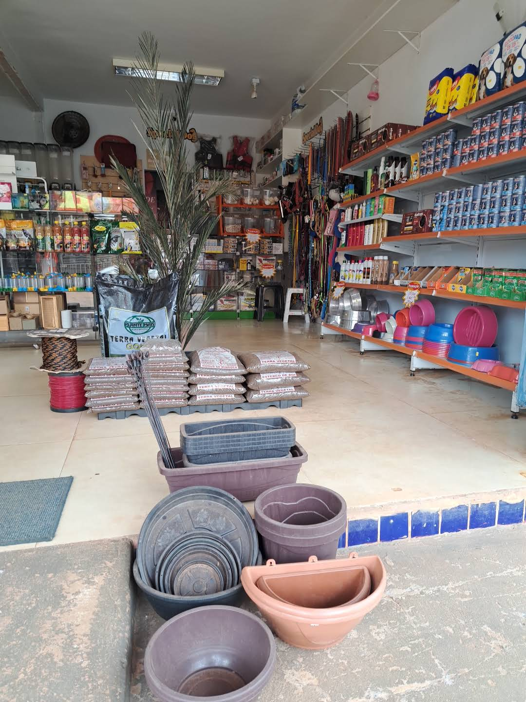

AGRO MEG
Sobre a nossa loja
Praticidade para encontrar o que você precisa, em um espaço pensado para pets e para a rotina do campo.

QUEM SOMOS
Ver localização →
Praticidade para encontrar o que você precisa.
A loja tem um espaço organizado em diferentes áreas, com produtos para pets, animais e atividades do dia a dia. A proposta do site é apresentar a variedade da loja e facilitar o contato antes da visita.
✓ Rações e produtos para animais
✓ Acessórios e brinquedos
✓ Produtos de higiene e cuidados
✓ Ferramentas e utilidades rurais
PRECISA DE ALGUMA COISA?
Abrir WhatsApp →
Fale com a Agro Meg antes de ir à loja.
Entre em contato pelo WhatsApp para perguntar sobre disponibilidade e atendimento.